杨威｜入司半年｜泰康 HWP｜AI 工作流实践者
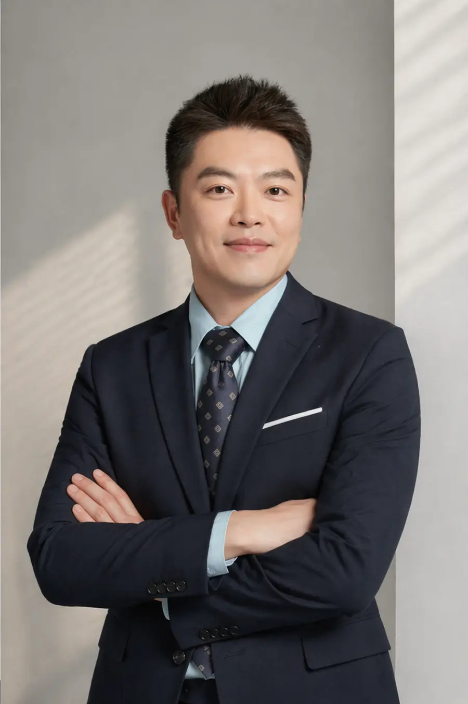
直到眼睛受伤，真正理赔过一次，我才明白保险不是话术。
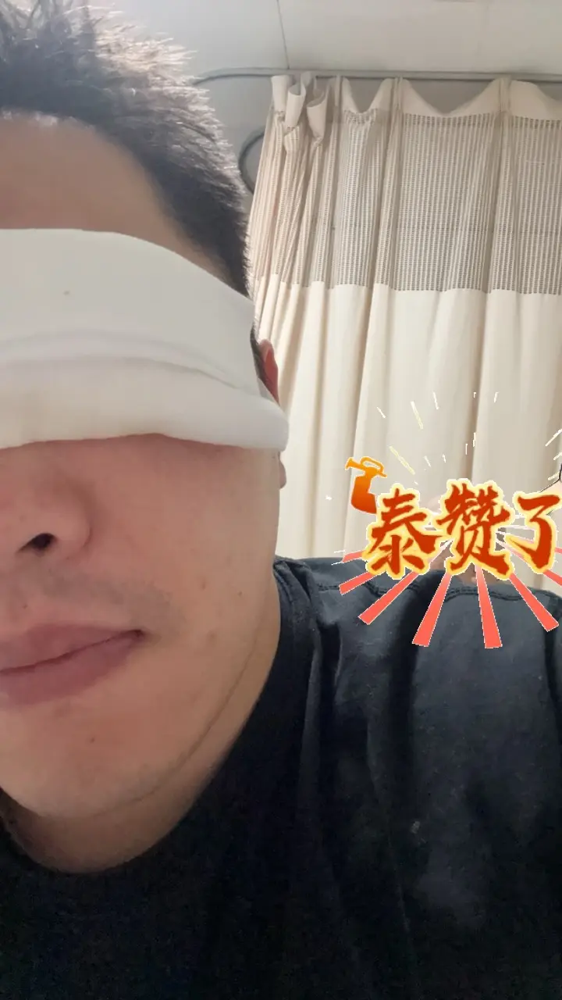
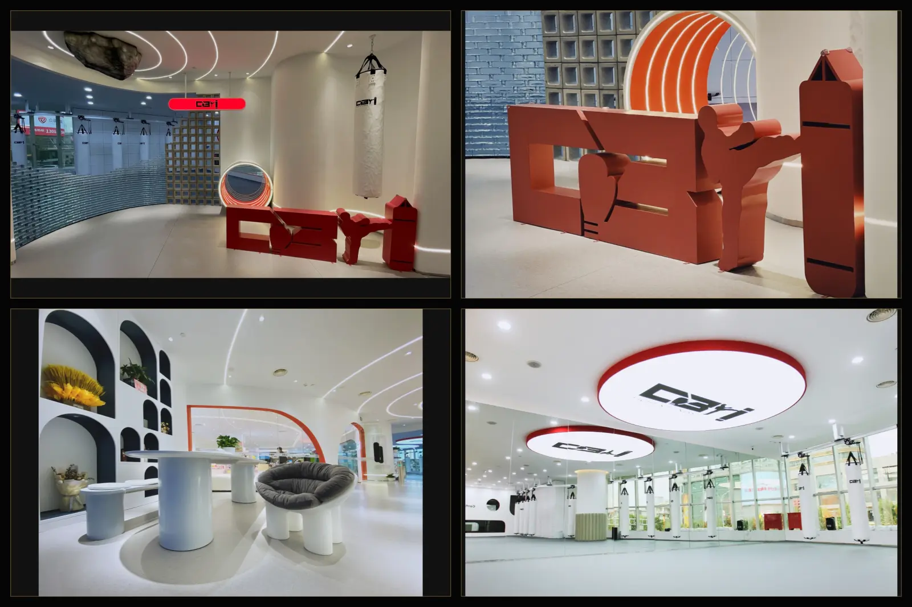
过去那些找路、扛结果、搭系统的经历，没有浪费。
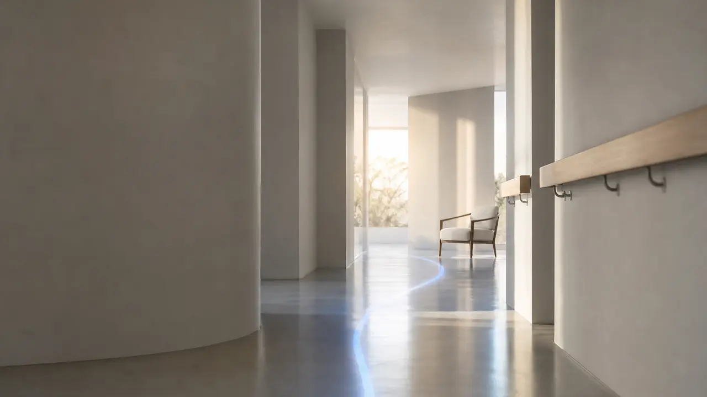
人口老龄化、银发经济、医养结合，落到每个家庭，就是父母怎么老、钱够不够、人由谁照护。
每天听课、见人、看方案，信息很多，心里却不一定踏实。新人最怕的不是辛苦，是不知道下一步该怎么做。
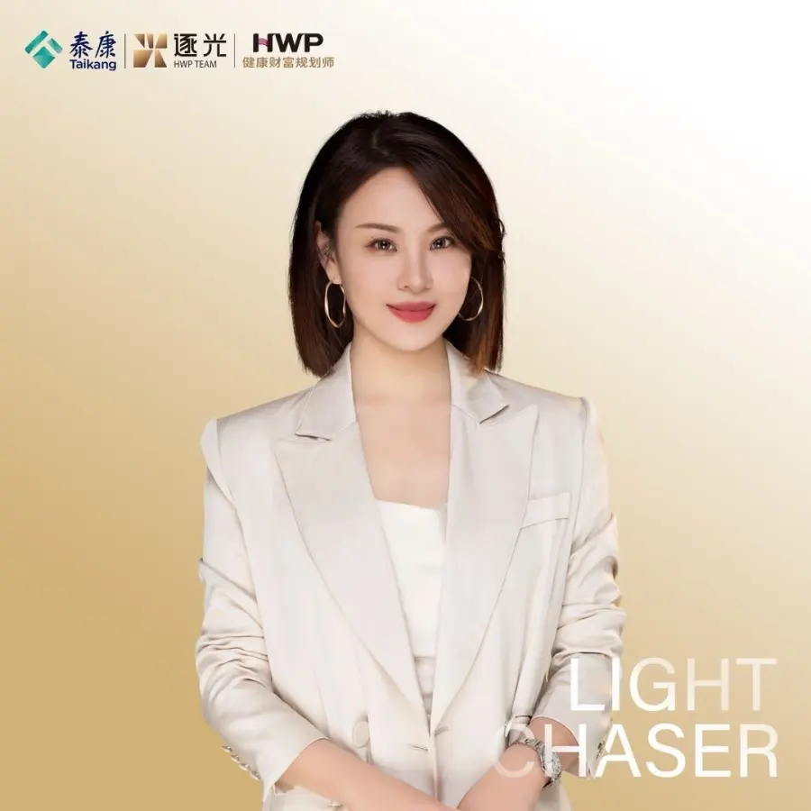
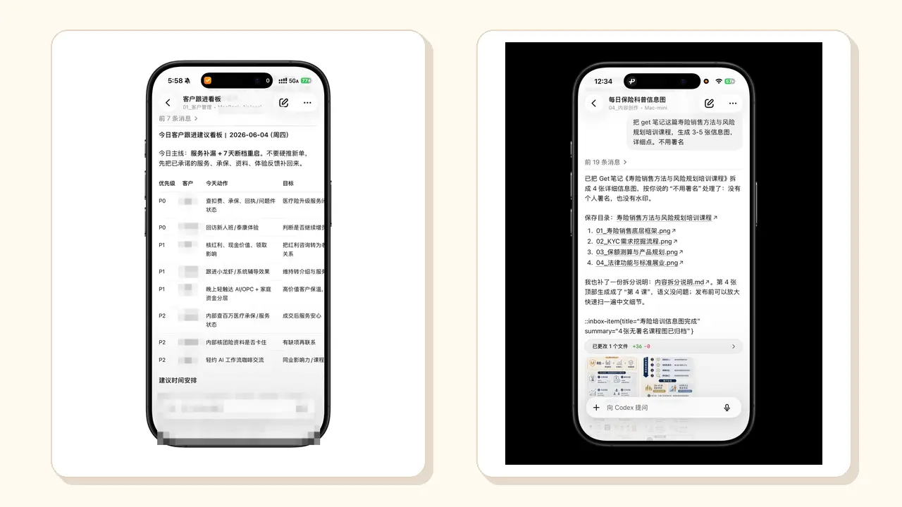
我没有让 AI 替我做人情、替我成交。它真正帮我的是：记住、整理、提醒、复盘，把服务动作变得更稳定。
每天谁要回访、谁要补资料、谁要继续解释，我让 AI 先帮我整理出来。人负责温度，系统负责不遗漏。
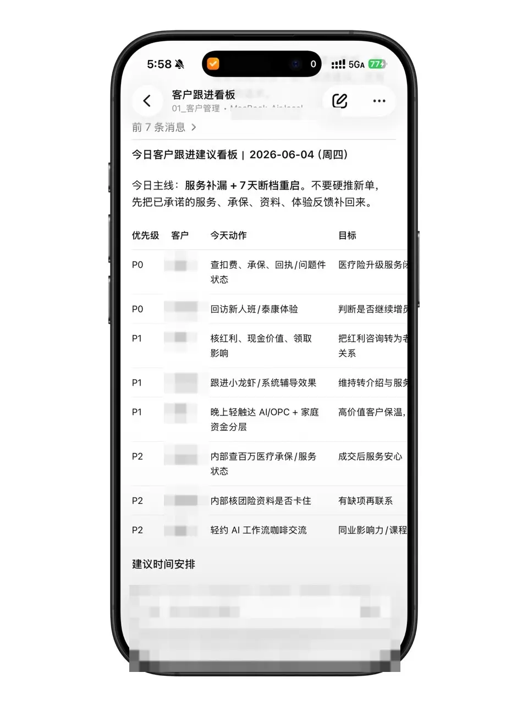
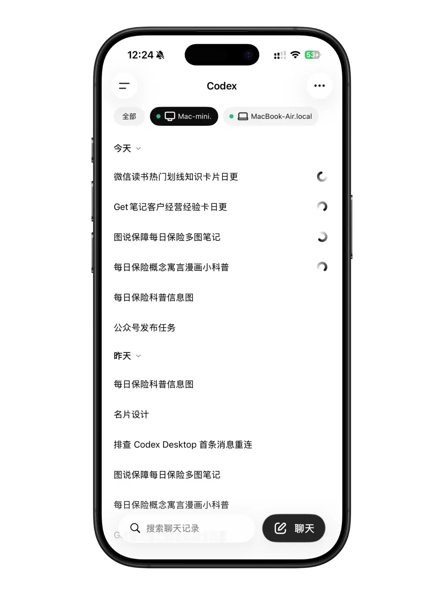
公众号、知识卡片、客户复盘、资料整理，很多事情不是难，而是容易断。自动化的价值，是让它们每天继续跑。
保险知识、养老问题、客户常问的问题，沉淀下来之后，下次就不是从零开始。
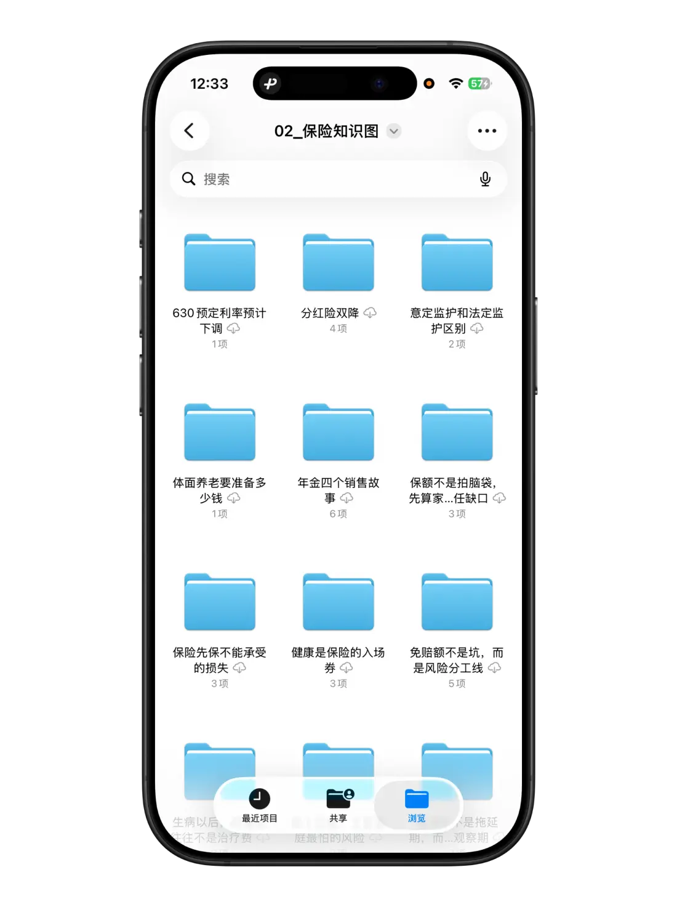
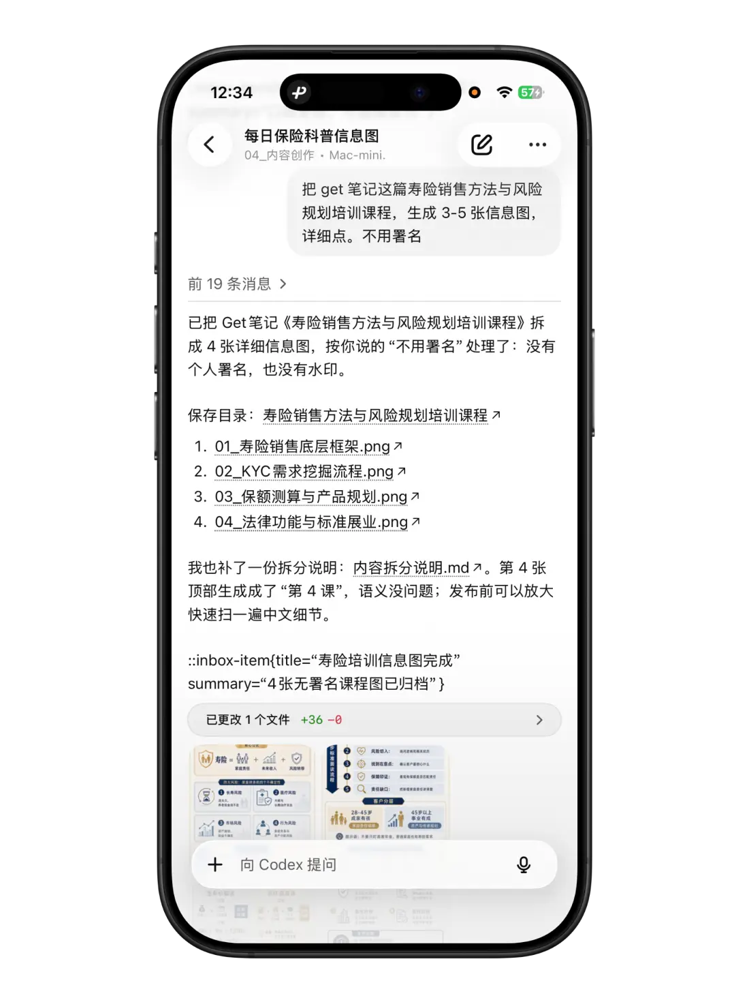
我会把客户真实困惑、培训笔记、行业信息，整理成更容易理解的文章、卡片和沟通材料。
AI 帮我把复杂问题拆成图，但真正的标准是：客户看完能不能明白下一步该怎么判断。
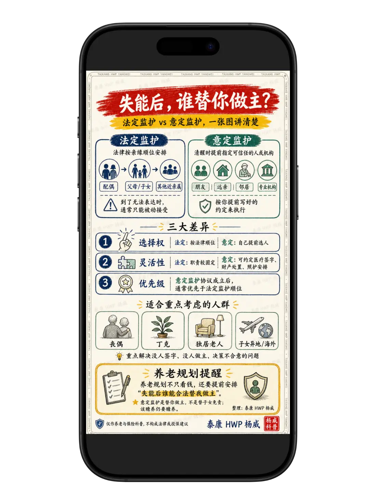
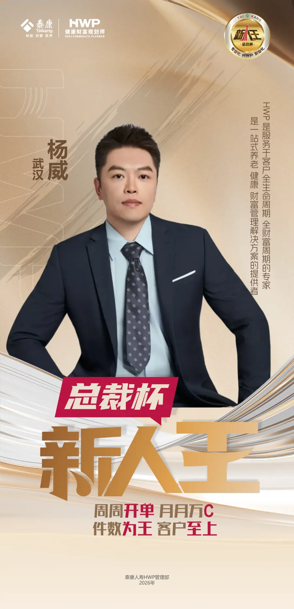
公司新人王，幸福有约社区单。对我来说，这不是炫耀，是确认方法开始生效。
我不需要变成别人。我可以把过去的创业经验、学习能力、AI 工具能力，放到保险和养老服务里，走出自己的路。
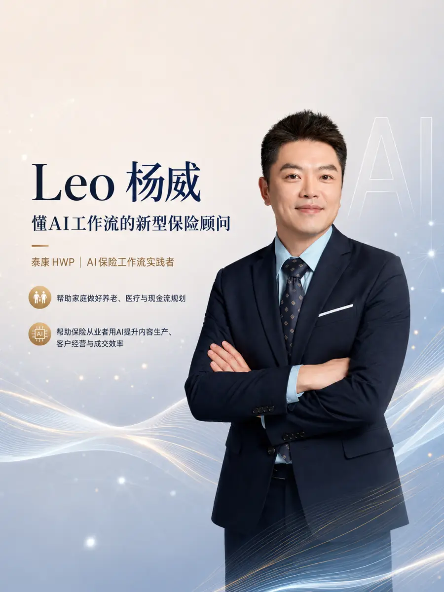
感谢陈亮主管、袁晴总监在客户洽谈、经验积累、团队方向和资源上的支持。逐光对我来说，是一个有爱、有梦想，也愿意托举新人的团队。
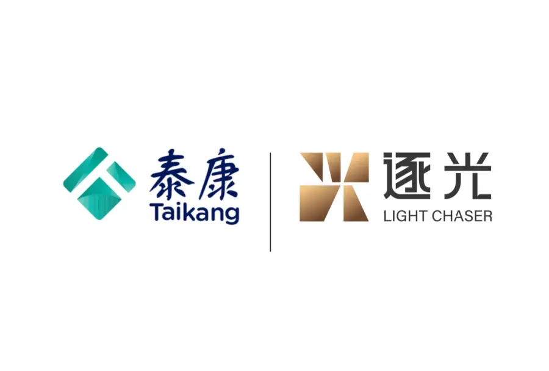
前天听梁天龙老师讲这句话，我特别有感触。
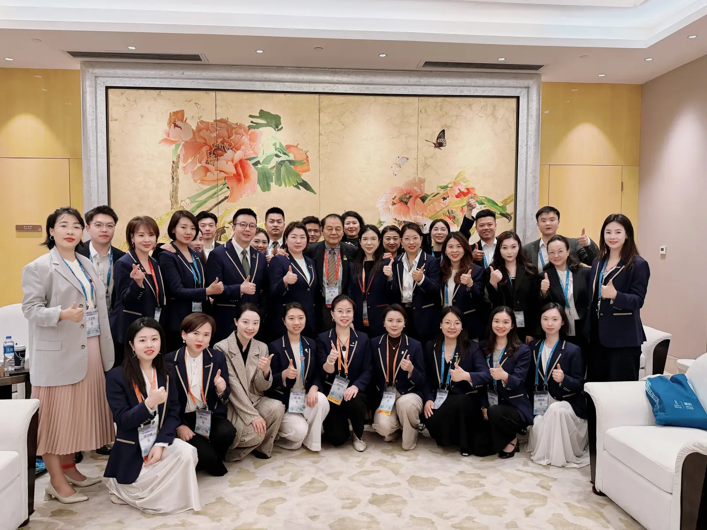